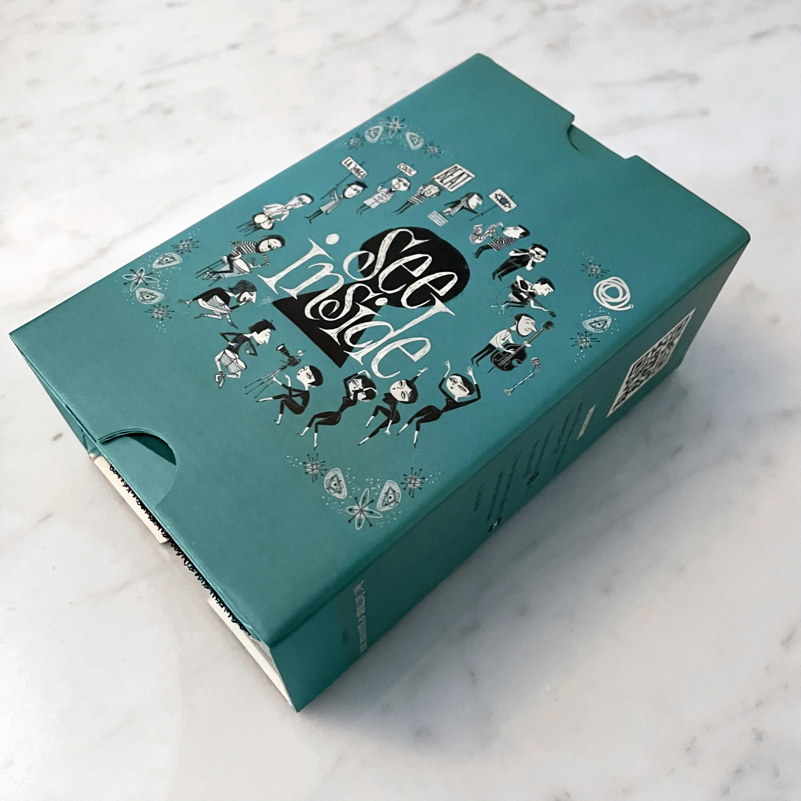
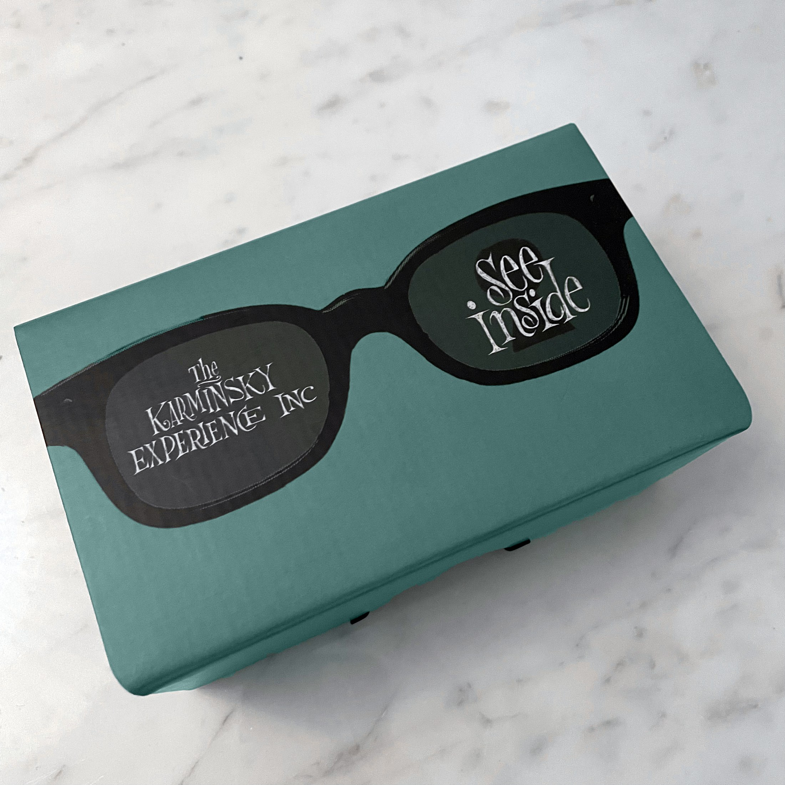
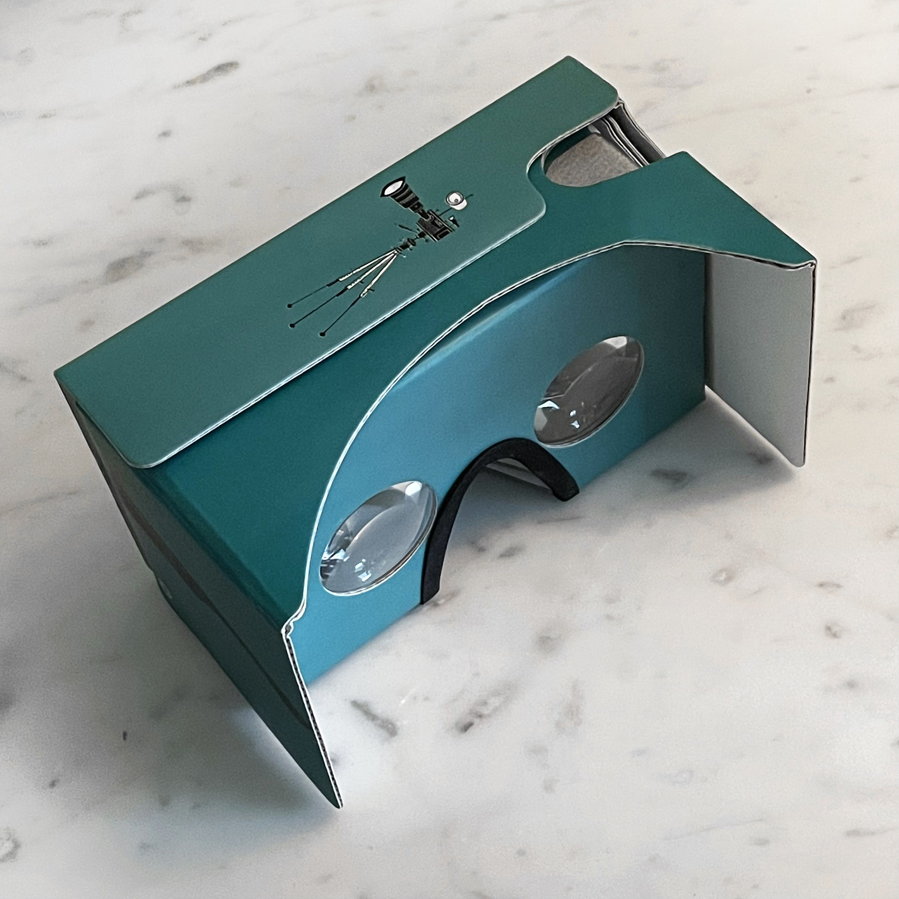

Cocktails in VR
Written By Guy Nisbett
When friends and collaborators The Karminsky Experience Inc. released this fabulous limited edition 7" with cover art by @drybritish, the temptation to turn it into a 3D 360 / VR movie proved too great to resist. It also provided a chance to try out Blackmagic Fusion's VR tools.
The result was a promotional Google Cardboard viewer, for a 3D experience using a smartphone. The same assets could also be enjoyed as 2D 360 on Facebook, simply by waving your phone or iPad around.




Here's the film, and while full 3D viewing on an Oculus after a strong cocktail is recommended, you can still have fun in 2D with a mobile and a swivel chair.
On mobile devices, for the best experience watch it in the YouTube app, here.
Even on a desktop, you can look around by clicking and dragging, the 20th century way.